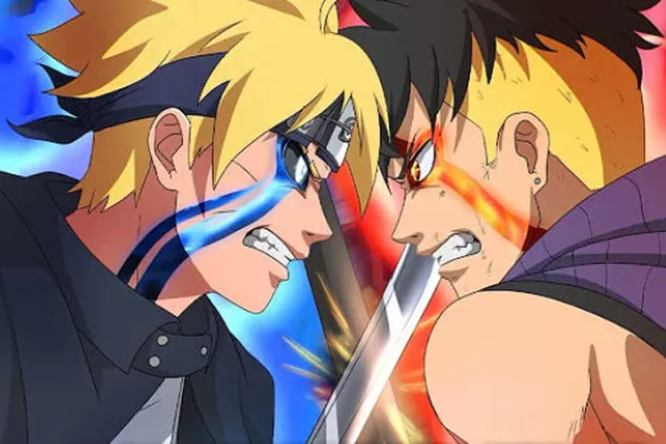
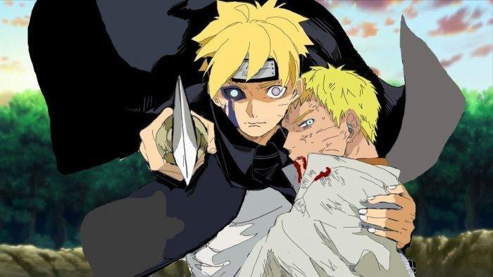

BORUTO GENERATIONS
Boruto Uzumaki (Jepang: うずまき ボルト, Hepburn: Uzumaki Boruto), awalnya dieja oleh Viz Media sebagai "Bolt",[1] adalah seorang karakter fiksi yang diciptakan oleh mangaka Masashi Kishimoto, yang pertama kali muncul pada akhir cerita dari seri manga Naruto sebagai putra dari tokoh utama dan protagonis Naruto Uzumaki dan Hinata Hyuga. Ia kemudian muncul sebagai tokoh utama dalam film anime tahun 2015 bertajuk Boruto: Naruto the Movie, di mana ia berlatih sebagai seorang ninja untuk melampaui ayahnya, pemimpin desa ninja Konohagakure. Boruto juga berperan sebagai tokoh protagonis dalam seri manga dan anime Boruto: Naruto Next Generations. Di manga, kisah diawali dengan menceritakan kembali film Boruto, sedangkan anime dimulai dari masa kecilnya di akademi ninja di mana ia bertemu dengan rekan-rekannya di masa depan—Sarada Uchiha dan Mitsuki—begitu pula dengan gurunya, Konohamaru Sarutobi.
Meski penampilan dan desain fisik Boruto serupa dengan Naruto saat ia masih kecil, kepribadian mereka berkembang secara berbeda. Hubungan Boruto dengan ayahnya merefleksikan hubungan Kishimoto dengan anaknya. Dalam versi bahasa Jepang, suara Boruto diisi oleh Kokoro Kikuchi di The Last: Naruto the Movie dan oleh Yūko Sanpei pada kesempatan berikutnya. Sanpei menikmati kelakuan dan tingkah laku Boruto, dan menyebutnya menawan. Untuk versi bahasa Inggris, suaranya diisi oleh Amanda C. Miller.
ボルト
Boruto: Naruto Next Generations ditulis oleh Ukyō Kodachi dan diilustrasikan oleh Mikio Ikemoto. Manga ini mulai dimuat dalam edisi ke-23 dari majalah Weekly Shōnen Jump yang diterbitkan oleh Shueisha pada tanggal 9 Mei 2016. Manga ini dimuat dalam majalah tersebut hingga edisi ke-28 yang diterbitkan pada tanggal 10 Juni 2019, dan dipindahkan ke majalah V Jump edisi bulan September yang diterbitkan pada tanggal 20 Juli.[2][3] Pencipta seri aslinya, Masashi Kishimoto, sekarang mengawasi pengerjaan manga ini, yang diilustrasikan oleh mantan asisten kepalanya dan ditulis oleh penulis skenario film Boruto: Naruto the Movie.[4] Demi mempertahankan agar keseluruhan cerita Naruto selesai di bawah seratus volume, Ikemoto berharap untuk menyelesaikan manga ini kurang dari 30 volume.